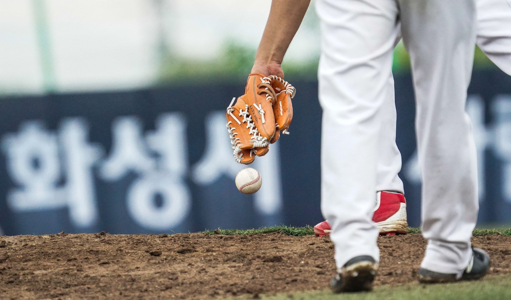

Understanding glove materials and leather quality
When searching for the best baseball gloves 2026, the first thing you must consider is the leather. Not all hides are created equal, and the quality of the leather dictates how long your glove will last and how well it will hold its shape during intense play. High-end models typically use Kip leather, which is thinner and lighter, or premium steerhide, which is incredibly durable and perfect for heavy-duty use.
For players just starting out, a synthetic leather or a lower-grade cowhide might suffice for a single season. However, if you are a competitive player looking to invest in gear that matures with you, steerhide is the gold standard. As the leather breaks in, it develops a custom feel that molds specifically to your hand, providing better control and responsiveness.
Choosing the right model for your position
A common mistake players make is buying a glove based on looks rather than utility. Your position dictates the shape, pocket depth, and webbing style you need. An infielder needs a glove that allows for lightning-fast transitions, while an outfielder needs a deep pocket to secure fly balls without them popping out.
Infielders should look for smaller, shallower gloves with minimal webbing to facilitate quick releases. Outfielders require larger gloves with deep pockets and wider webs to maximize the surface area for catching long drives. Pitchers and catchers have even more specialized requirements, focusing on grip and protection.
A glove that fits your position perfectly is more than just equipment; it is an extension of your hand on the field.
Sizing and fit for maximum comfort
Even the most expensive glove will fail you if the fit is wrong. A glove that is too large will feel clunky and slow your reaction times, while a glove that is too small will cause hand fatigue and discomfort. You should be able to slip your hand in comfortably, with enough room to move your fingers without the glove feeling loose or unstable.
Don't forget about the webbing. A tight, stiff web is great for stability, but it requires more break-in time. If you are playing in a tournament this weekend, you might want a glove that is already broken in, whereas a player preparing for a long season might prefer a stiff, high-quality glove that they can shape over several weeks.
The importance of the break-in process
Once you have identified the best baseball gloves 2026 has to offer, the work is only half done. Most professional-grade gloves arrive stiff and difficult to use. The break-in process is essential to transform a piece of leather into a responsive tool. This involves conditioning the leather and physically shaping the pocket.
Avoid the temptation to use extreme methods like putting your glove in the oven or soaking it in water. These can damage the fibers of the leather and lead to cracking. Instead, use high-quality glove conditioners and spend time catching soft tosses or using a ball mallet to gently shape the pocket.
Final thoughts on gear and performance
Investing in the right equipment is a major step toward improving your game. When you have a glove you can trust, you play more aggressively and with less hesitation. Remember to balance your budget with your skill level, and always prioritize leather quality over flashy brand logos.
While having the best gear is vital, remember that equipment alone won't make you a star. You must pair your new glove with consistent physical training and skill drills. To complement your new gear, check out our guide on the Best Baseball Workout Routines for Players to Improve at https://dhyey.bond/blog/best-baseball-workout-routines-for-players-to-improve/ to ensure your body is as ready as your glove.
See Also
If you enjoyed this Baseball Guide article, check out Best Baseball Workout Routines for Players to Improve for more useful reading.